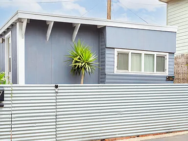
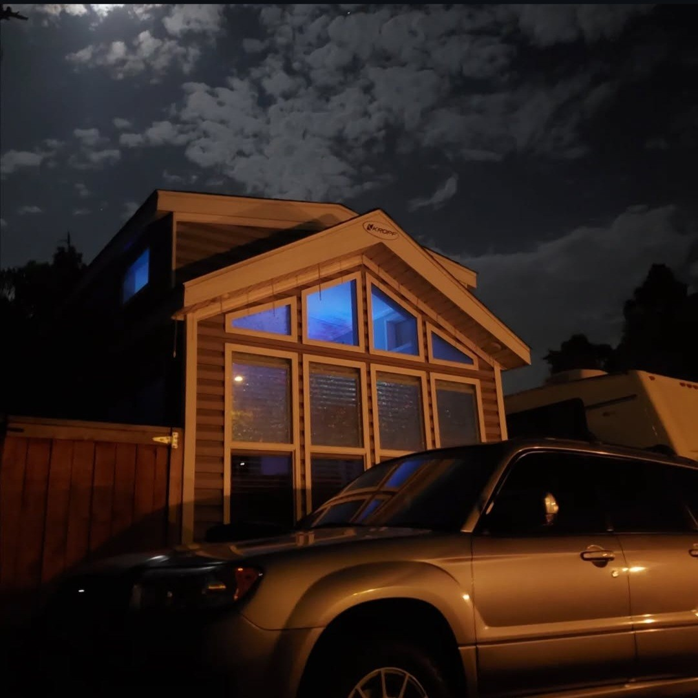

Residential
Hands-on home projects, from tiny home design to full trailer restorations, blending functionality with custom craftsmanship.

Revitalizing a 1957 Beachside Trailer
Restoring a neglected 1957 beachside trailer, I overhauled its structure, utilities, and design—turning a damaged unit into a functional, modern living space.

Designing a Custom Tiny Home by the Beach
I designed and planned every detail of a custom tiny home, creating a space tailored for efficiency, comfort, and beachside living.